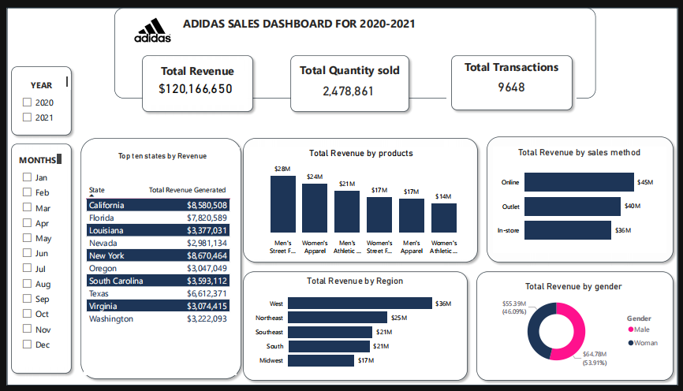

I am a passionate Data Analyst with a background in Accounting, I excel at turning raw data into actionable insights. With expertise in data collection, cleaning, and analysis, I'm adept at uncovering trends and presenting findings in a clear, compelling manner. My attention to detail ensures data accuracy, and my background in accounting adds a unique financial perspective to my analytical skills. I am open to collaborate on impactful data-driven projects!
.

This project involved performing a comprehensive financial analysis for Daniel Stores using Power BI. The primary goal was to examine year-over-year performance, understand revenue and profit drivers, and identify trends across countries, products, and customer segments. Data visualizations were leveraged to draw actionable business insights for strategic decision-making.

.This project presents an in-depth analysis of the Superstore dataset using Excel to uncover key insights on sales, profitability, customer behavior, and regional performance.
Key Objectives:
Identify top-performing product categories and sub-categories,
Analyze sales and profit distribution across customer segments and regions,
Assess the impact of discounts on profitability,
Provide data-driven recommendations for business growth.

This project involves analyzing Adidas sales data from 2020 to 2021 using Power BI to understand regional, gender, product, and channel-based performance. The dashboard was designed to provide insights into sales trends, customer preferences, and transactional data to support strategic business decisions.

Donec eget ex magna. Interdum et malesuada fames ac ante ipsum primis in faucibus. Pellentesque venenatis dolor imperdiet dolor mattis sagittis magna etiam.

This project marked my first hands-on experience with Power BI. It involved visualizing and analyzing crime data across Nigeria’s six geo-political zones for the year 2017. The primary focus was on two major categories: Offences Against Persons and Offences Against Lawful Authority. The analysis helped uncover regional crime distribution patterns and state-specific insights.

Donec eget ex magna. Interdum et malesuada fames ac ante ipsum primis in faucibus. Pellentesque venenatis dolor imperdiet dolor mattis sagittis magna etiam.